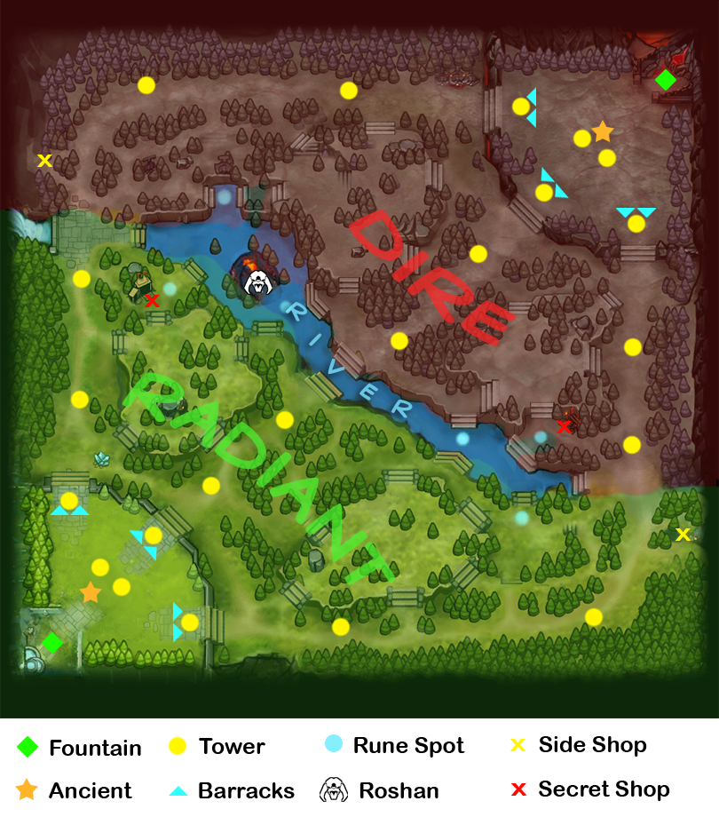

GAME MECHANICS
What Is DOTO 2?
Doto 2 is a team-oriented game pitting two teams of five players against each other.
You win the game by destroying the enemy's Ancient building before they destroy yours.
The Ancient is the largest building and is centrally located in each team's main base.
MAP

The Doto 2 map is divided into two sides, Radiant and Dire.
Radiant is on the left, and it’s a verdant, idyllic paradise.
Over the river that runs diagonally from top left to bottom right,
you’ll find the Dire lands on the right side of the map, all covered in bugs and stuff.
The map is also split into three lanes – top, middle, and bottom.
The area between the lanes contains camps of neutral creeps, and is known as the jungle.
Each team has three towers running down their side of each lane,
which automatically attack enemy creeps and heroes within a certain radius.
TOWER
Towers are the main line of defense for both teams, attacking any non-neutral enemy that gets within their range. Both factions have all three lanes guarded by three towers each. Additionally, each faction's Ancient has two towers as well, resulting in a total of 11 towers per faction.
Towers come in 4 different tiers:
- Tier 1, located at the end of each lane.
- Tier 2, located halfway through each lane.
- Tier 3, located on top of the 3 ramps at each base.
- Tier 4, located in pairs in front of each Ancient.
BARRACKS
Barracks defended by tier 3 towers, that are responsible for keeping lane creeps as powerful as their counterparts. There are two Barracks for each lane per faction - one for melee creeps, and one for ranged creeps. The ranged barracks are always located to the left of the melee barracks on each lane and both factions.
ANCIENTS
Ancients are massive structures found inside each faction's base and are the main objective. In order to win, the enemy team's Ancient must be destroyed, while the own one must be kept alive. Ancients are guarded by their two tier 4 towers. The Ancients are invulnerable until both of their tier 4 towers are destroyed.
FOUNTAINS
Fountains are buildings located in the respawn areas of both bases, and provide scaling health and mana regeneration to all allied units near it. Fountains are permanently invulnerable, so they can never be destroyed.
HEROES
Heroes are the essential element of Doto 2, as the course of the match is dependent on their intervention. During a match, two opposing teams select five out of 10 heroes that accumulate Experience (XP) and Gold Gold to grow stronger and gain new abilities in order to destroy the opponent's Ancient. Most heroes have a distinct role that defines how they affect the battlefield, though many heroes can perform multiple roles. A hero's appearance can be modified with equipment.
Heroes have one of three primary attributes:
- Strength
Strength heroes are tough warriors and can withstand more damage than other heroes. These heroes have the greatest natural health and can regenerate quickly, keeping them in the fight and dealing damage. Strength heroes can fit a variety of roles, with many being initiators or heavy disablers, and are almost always melee heroes.
- Agility
Agility heroes are finessed and dexterous, making them masters of weapons and fighting techniques. These heroes have high attack speed and armor, and focus on using their regular attacks in conjunction with the items they have equipped, but can fall back on their abilities in a pinch. Agility heroes are often played in carry and ganker roles, because of how well they scale.
- Intelligence
Intelligence heroes are masters of spells and abilities. They tend to have larger mana pools and much greater mana regeneration than other heroes. Because of this, they often rely on their abilities to help allies and harm enemies rather than physical attacks, although some of them utilize their magical powers to heavily enhance their attack capabilities. Most intelligence heroes are fragile ranged heroes, though this does not necessarily mean they are easy to kill. As a result, they are often played in support, ganker, and pusher roles, while some are played as carries.
CREEPS
Lane Creeps
Neutral Creeps
Creeps are basic units in Dota 2. Every unit which is not a hero, building, ward or courier is considered a creep. Creeps can belong to either faction, be neutral, or be player-controlled units. Unlike heroes, creeps do not gain experience and cannot level up. All of their stats are set values (though can still be altered by modifiers). Most creeps grant a set gold and experience bounty to heroes when killed.
There are 2 types of Creeps:
- Lane Creeps
Lane creeps are a type of creep that automatically moves down the three lanes towards the enemy faction's Ancient. Each and every 30 seconds a new group (the creep wave) spawns for each faction at each of their barracks, but the number in the group and their stats eventually change, as the game progresses. Lane creeps engage any hostile unit nearby, but when left unattended, the opposing creeps end up clashing each other in the lanes on their way towards the enemy base.
- Neutral Creeps
Neutral creeps are a type of creep that are not controlled by any player. They are aligned to neither of the teams, and offer an alternative source of gold and experience. Neutral creeps appear in small camps scattered in the jungle on both sides of the map. They come with different power levels and most of them have unique abilities.